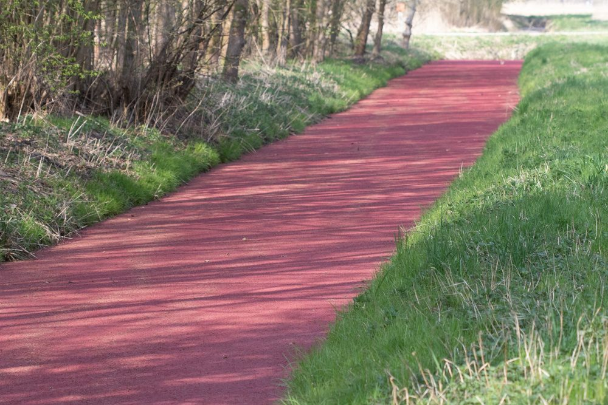

Beheer & waterschappen
Invasieve exoten
Invasieve exoten verdringen inheemse soorten en kunnen ecosystemen ontwrichten. Wij helpen waterschappen, gemeenten en terreinbeheerders met inventarisatie, kartering en een praktisch bestrijdingsplan.
Vrijblijvend overleggen
Vroeg gevonden is half bestreden
Inventarisatie en beheeradvies
Vooral in en rond watergangen vormen soorten als grote waternavel en watercrassula een ernstige bedreiging voor doorstroming, waterkwaliteit en biodiversiteit. Vroegtijdig signaleren en gericht bestrijden is essentieel.
Brede soortkennis
Grote waternavel, watercrassula, ongelijkbladig vederkruid, Japanse duizendknoop en andere invasieve water- en oeverplanten.
Juridische toetsing
Toetsing aan de Europese en nationale wetgeving rond invasieve uitheemse soorten.
Maatwerk
Een aanpak afgestemd op uw locatie en situatie, met een bestrijdingsplan dat werkt.
Waarom snel handelen?
Invasieve exoten verspreiden zich razendsnel. Hoe eerder u ingrijpt, hoe lager de beheerkosten en hoe groter de kans op succesvolle bestrijding. Wij helpen u met een plan dat werkt.
Het beheer verspreidt de soort vaak zelf
De grootste versneller van een exotenprobleem is doorgaans niet de plant, maar de machine die erdoorheen gaat.
Veel invasieve water- en oeverplanten vermeerderen zich uit fragmenten. Eén stukje stengel of wortel volstaat om verderop een nieuwe haard te starten. Een maaibeurt of baggerronde die dwars door een besmette locatie loopt, verplaatst het probleem daarmee stroomafwaarts over het hele traject. Bij Japanse duizendknoop geldt hetzelfde voor grondverzet: verplaatste grond met wortelresten is de bekendste oorzaak van nieuwe groeiplaatsen.
Daarom begint een bruikbaar bestrijdingsplan bij de logistiek van het beheer, niet bij het bestrijdingsmiddel. Waar liggen de haarden, in welke volgorde werkt u het traject af, waar reinigt u materieel, en wat gebeurt er met maaisel en bagger. Dat kost bijna niets extra zolang het vooraf in het bestek staat, en is achteraf nauwelijks te repareren.
Wij karteren de haarden zo dat uw uitvoerders er in het veld mee kunnen werken, en vertalen dat naar werkbare afspraken voor de aannemer.
Wat wij doen
Kartering van haarden
Vlakdekkend of langs traject, met locatie en omvang per haard, in een vorm die aansluit op uw beheerkaarten.
Vroegsignalering
Gericht zoeken naar nieuwe vestigingen op de plekken waar die het eerst opduiken, zoals inlaten, bruggen, aanlegplaatsen en overstorten. Een haard die klein wordt gevonden is een fractie van het werk van een haard die is uitgegroeid.
Bestrijdingsplan
Per haard een aanpak en een volgorde, afgestemd op de soort, de standplaats en uw beheercyclus, met een realistische inschatting van hoeveel jaar nazorg nodig is.
Werkprotocol voor de uitvoering
Praktische afspraken over werkrichting, materieelreiniging en de afvoer van maaisel en grond, zodat het beheer de soort niet verder verspreidt.
Toetsing aan regelgeving
Toetsing aan de Europese Unielijst en de nationale regels, en aan de vraag welke verplichtingen daaruit voor u als beheerder volgen.
Combineren met soortenbescherming
Bestrijding is zelf ook een ingreep. Wij kijken meteen of er beschermde soorten in het geding zijn, zodat u niet het ene probleem oplost door een ander te veroorzaken.
Veelgestelde vragen
Kunnen jullie garanderen dat de soort weg is?
Nee, en wie dat wel belooft moet u wantrouwen. Bij de meeste invasieve water- en oeverplanten is volledige uitroeiing na één seizoen zeldzaam. Reken op meerjarige nazorg met herhaalde controle. Wat wij wél doen is vooraf eerlijk zeggen wat een realistisch doel is: uitroeien, terugdringen of beheersen op een aanvaardbaar niveau.
Wanneer kan een haard het beste in kaart worden gebracht?
In het groeiseizoen, wanneer de soort herkenbaar en volgroeid is. Buiten die periode is de kans op gemiste haarden groot, en juist de kleine, net gevestigde plekken zijn de plekken die u wilt vinden.
Wij vermoeden Japanse duizendknoop bij een bouwproject. Wat nu?
Laat de locatie in kaart brengen voordat er grond wordt verzet. Zodra besmette grond is afgevoerd, verspreidt het probleem zich naar de bestemming en wordt het aanzienlijk duurder. Bij twijfel over de soort kijken wij ter plaatse mee.
Voeren jullie de bestrijding zelf uit?
Nee. Wij doen de inventarisatie, het advies en het werkprotocol, en kunnen tijdens de uitvoering ecologisch toezicht houden. De bestrijding zelf laat u uitvoeren door een aannemer, aan de hand van het plan.
Invasieve exoten in uw beheergebied?
Vertel kort om welk gebied en welke soorten het gaat, dan denken wij mee over inventarisatie en bestrijding. Vroegtijdig ingrijpen loont.